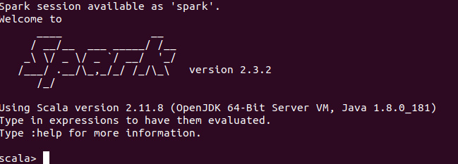
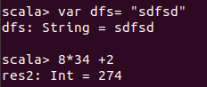
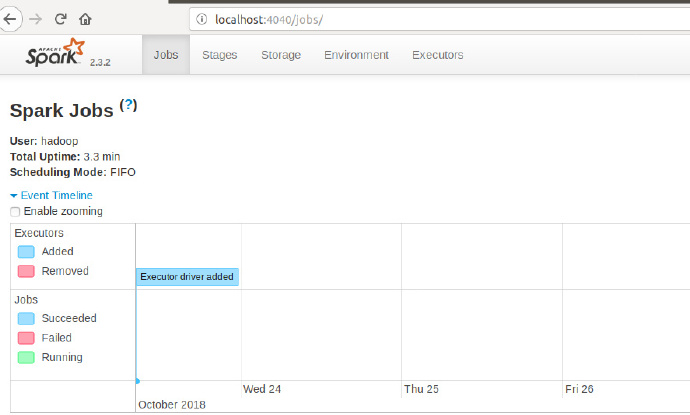
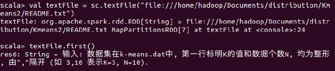
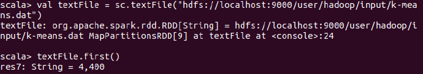
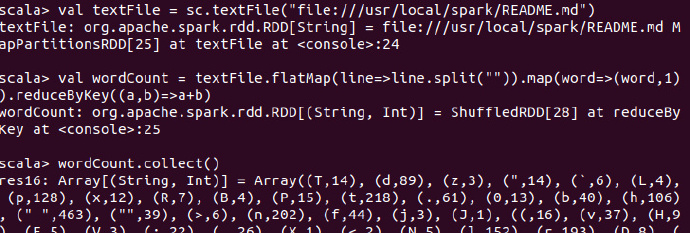

安装Spark
首先在官网上安装对应版本，因为已经安装了hadoop，选择without hadoop版本。
执行解压、修改文件名、配置文件等操作：
sudo tar -zxf spark-2.3.2-bin-without-hadoop.tgz -C /usr/local
cd /usr/local
sudo mv ./spark-2.3.2-bin-without-hadoop/ ./spark
sudo chown -R hadoop:hadoop ./spark
cd spark/
cp ./conf/spark-env.sh.template ./conf/spark-env.sh
export SPARK_DIST_CLASSPATH=$(/usr/local/hadoop/bin/hadoop classpath)
vim conf/spark-env.sh
同时，将/usr/local/spark/bin目录加入系统PATH：~/.bashrc，并刷新source ~/.bashrc。
Spark Shell
执行spark shell：
bin/run-example SparkPi
bin/spark-shell
出现如下界面：

测试Spark shell

浏览器查看
启动Spark shell时后，在浏览器中输入localhost:4040：

文件访问
首先访问本地的文件：
val textFile = sc.textFile("file:///home/hadoop/Documents/distribution/Kmeans2/README.txt")
textFile.first()

访问HDFS上的文件
val textFile = sc.textFile("hdfs://localhost:9000/user/hadoop/input/k-means.dat")
textFile.first()

在这里也可以不指定localhost，以下三种方式都是等价的：
val textFile = sc.textFile("hdfs://localhost:9000/user/hadoop/input/k-means.dat")
val textFile = sc.textFile("/user/hadoop/input/k-means.dat")
val textFile = sc.textFile("input/k-means.dat")
WordCount
val textFile = sc.textFile("file:///usr/local/spark/README.md")
val wordCount = textFile.flatMap(line=>line.split("")).map(word=>(word,1)).reduceByKey((a,b)=>a+b)
wordCount.collect()

- 在这里，
textFile包含多行文本内容，flatMap会遍历其中的每行文本内容，当遍历当一行文本内容时，会把本行内容赋值给变量line，并执行Lambda表达式line => line.split("")。 - 这里采用每个单词分隔符，切分得到拍扁的单词集合。
- 然后执行
map函数，遍历这个集合中的每个单词，将输入的word构建得到一个映射（Map是一种数据结构），这个映射key是word，value为1. - 得到映射后，包含很多
(key，value)，执行reduce，按照key进行分布，然后使用给定的函数对相同key的多个value进行聚合操作，得到聚合后的(key，value)
在集群中访问
spark-shell --master spark://10.11.6.91:7077
val textFile = sc.textFile("hdfs://10.11.6.91:9000/README.md")
textFile.count()